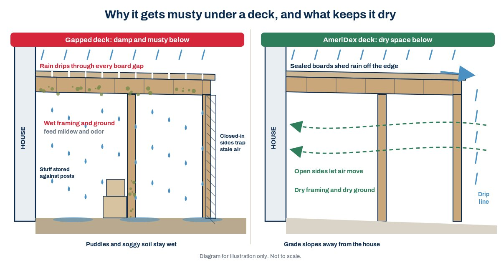

You walk under the deck to grab a chair and the air smells like a damp basement. Maybe there are dark spots on the joists, green film on the posts, or mildew on the cushions you stored down there.
That smell is a moisture problem. Fix where the water comes from and how the space dries, and the smell goes with it.
Most musty decks are damp because rain drips through the board gaps, the ground does not drain, and air cannot move. Stop the water from above, send it away from the house, open up airflow, and clear out anything that holds moisture. On an AmeriDex deck the sealed surface sheds rain off the drip edge, so the space below stays dry.
Five reasons it smells musty under a deck
Rain drips through the board gaps
A standard deck is built to drain through its gaps, so every rain soaks the framing and the ground below. Wood holds that water and keeps dripping after the storm. See why water drips through deck boards.
Ground that never dries
Soil that slopes toward the house, low spots that hold puddles, and downspouts that empty near the deck keep the ground wet.
Shade and still air
The space under a deck gets little sun. Solid skirting, closed-in sides, and thick plantings stop the breeze that would dry it out.
Leaves and dirt that sift through
Debris falls through the gaps and piles up underneath. Wet leaves and dirt hold moisture and give mildew something to grow on.
Stuff stored on bare ground
Cardboard, cushions, firewood, and tarps sitting on damp soil or against posts trap moisture where air cannot reach.
Gapped deck vs AmeriDex: what happens below
On an AmeriDex deck, the boards lock onto the Dexerdry seal between every board, so the surface sheds water like a roof. The deck is pitched at least 1/8 inch per foot away from the house, and rain drops off the drip edge instead of falling through. See how the system works.
| Gapped deck | AmeriDex deck | |
|---|---|---|
| When it rains | Water drips through every gap onto the framing and ground | Rain runs across the sealed surface and off the drip edge |
| Framing overhead | Gets wet every storm and dries slowly | Stays dry |
| Leaves and dirt | Sift through the gaps and pile up below | Stay on top, where you can sweep them off |
| The space below | Damp, often musty | A dry space you can use |
If mold covers a large area, has spread onto the house, or you smell it indoors, have a qualified professional take a look. If posts, beams, or joists feel soft, have a deck builder check the framing before anyone uses the deck.
Checklist: how to dry out the space under a deck
Stop the water from above
On a new deck or a re-deck, build the surface to shed rain so nothing drips through. On an existing deck, see your options for an existing deck.
Send downspouts away from the deck
Make sure roof water is not emptying under or next to the deck. Extend downspouts so the water lands well away from the space.
Slope the ground away from the house
Soil under the deck should drain away from the foundation, not toward it. A landscaper can regrade low spots that hold puddles.
Open up airflow
Keep at least some sides open, or use vented skirting, lattice, or screens. Trim back dense shrubs that block the breeze.
Clear out leaves and debris
Rake out leaves, needles, and dirt that collect under the deck. Wet debris holds moisture against the ground and the posts.
Get stored items off the ground
Use shelves or raised racks and plastic bins instead of cardboard. Keep firewood, cushions, and boxes away from posts and the house wall.
Clean mildew off surfaces
Wash mildew off the deck, posts, and furniture with a cleaner made for that material, and follow the label. On PVC boards, skip the pressure washer.
Check the framing
Probe posts, beams, and joists with a screwdriver. Soft or crumbling wood is a sign of rot, so have a deck builder inspect it.
That is the moment to decide whether the space below should stay dry. AmeriDex goes in during new construction or a full re-deck, so plan it before the boards go down. Our guide to keeping the space under a deck dry walks through it.
Do
- Start with a deck surface that keeps the space below dry
- Send roof and deck runoff away from the house
- Keep air moving with open or vented sides
- Store things on shelves, in plastic bins
- Check the framing after a wet season
Don't
- Let downspouts empty under the deck
- Close in every side with no airflow
- Pile cardboard, cushions, or firewood on bare soil
- Pressure wash PVC deck boards
- Drive screws up through the deck boards
What a dry space makes possible
Once the space below stays dry, it stops being a damp crawl space and starts working like a covered room. Popular projects include a patio under the deck, dry storage, a play area, and an outdoor kitchen. For the bigger picture, see dry space decking and under deck living space ideas.
AmeriDex boards and accessories carry a 25-year limited residential warranty and a 10-year limited commercial warranty under the AmeriDex Limited Warranty from A&M Building Products LLC.
Frequently asked questions
Why does it smell musty under my deck?
A musty smell usually means the space stays damp. On a regular gapped deck, rain drips through every board gap onto the framing and the ground, and shade and closed-in sides slow drying. Leaves and dirt that fall through the gaps hold more moisture. Stop the water from above, keep air moving, and keep the ground draining away from the house.
Can mold grow on AmeriDex deck boards?
Mold cannot feed on PVC itself. It can grow on pollen, dirt, or leaf debris left on the surface in shady, damp spots. Clean it off using the steps in our PVC deck cleaning guide, and do not pressure wash.
Will gravel under a deck stop mold?
Gravel can help the ground drain and keep weeds down, but if rain keeps dripping through the boards, the space below stays damp. Stop the water at the deck surface first, then choose the ground cover you want, such as a patio, pavers, or gravel.
Can AmeriDex be added to my existing deck?
Not over deck boards that are already installed. On an existing deck the only path is a re-deck, where the old boards come off and AmeriDex boards and Dexerdry go down on the existing framing, and that is only possible if the framing meets pitch and overhang requirements.
Should I close in the space under my deck?
You can, but plan for airflow. Fully closed sides with no openings trap damp air. Start with a dry deck overhead, then use screens, vented skirting, or open sides so air can move. A screened porch is a popular way to do it.
Planning a deck that stays dry below?
Start a free quote with your deck size and how you want to use the space below. Request free samples to see the boards and the seal up close. Always follow your local code.